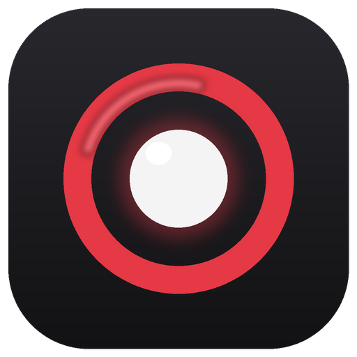
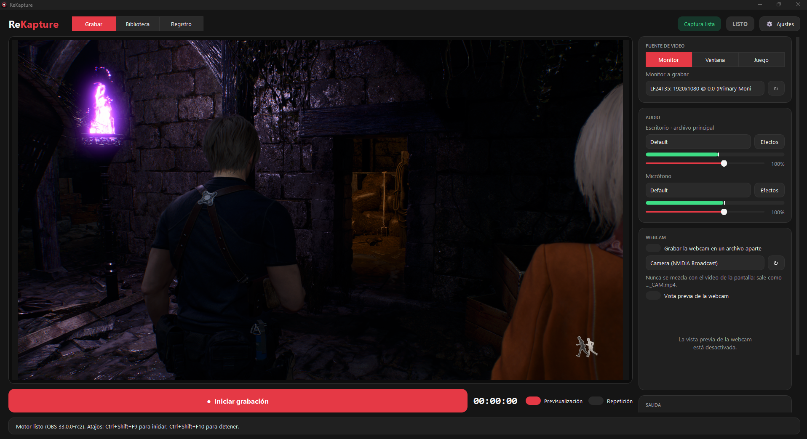
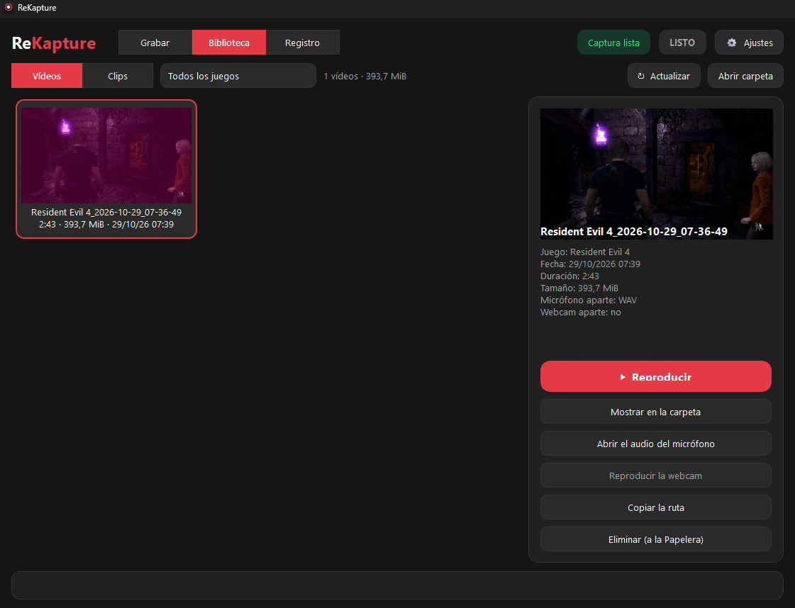
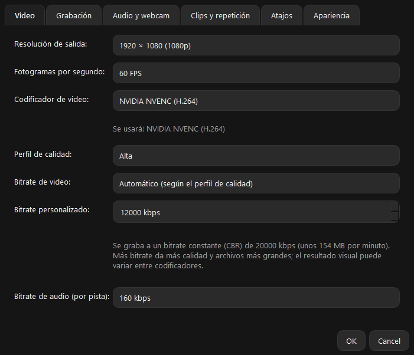
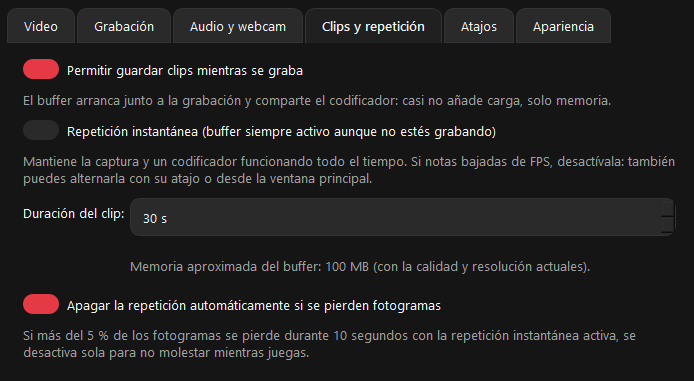
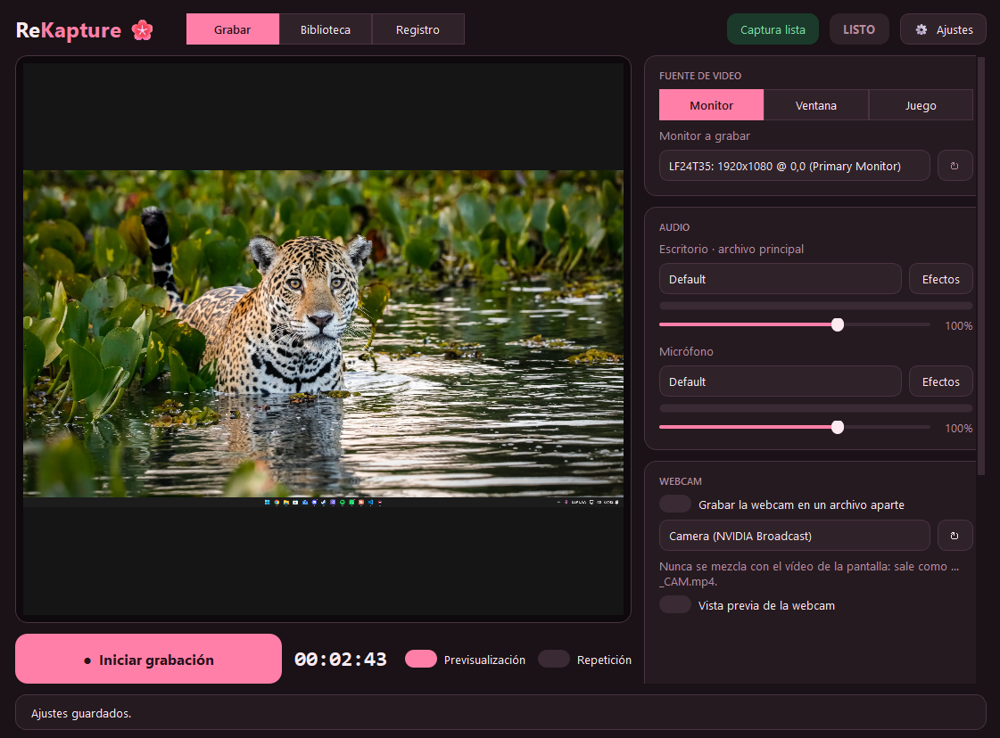
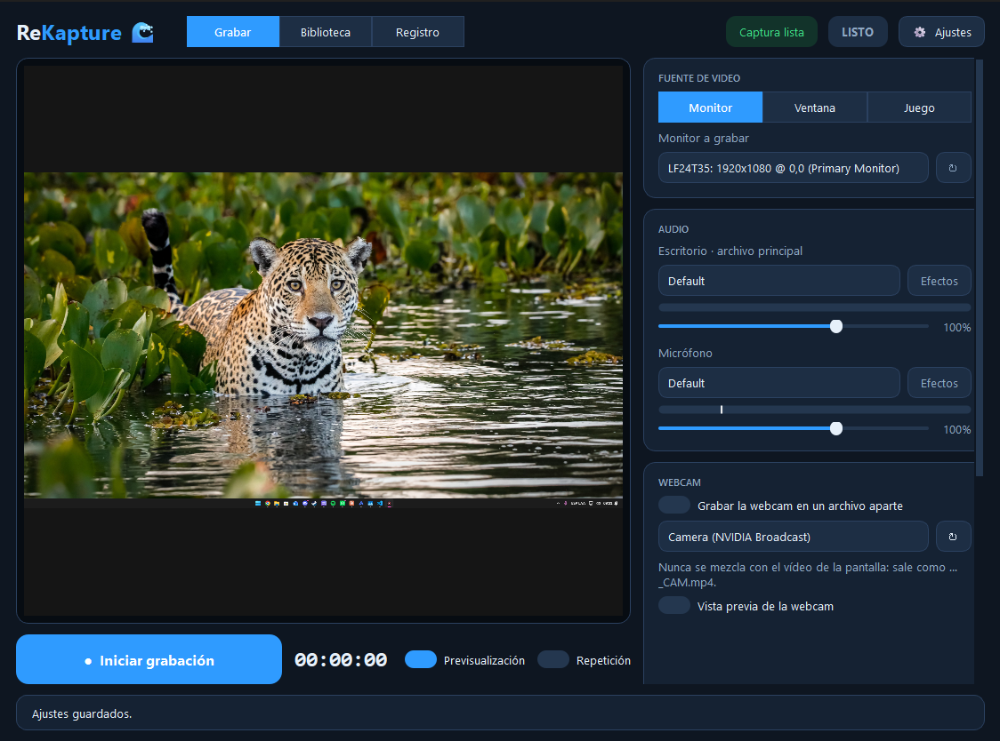
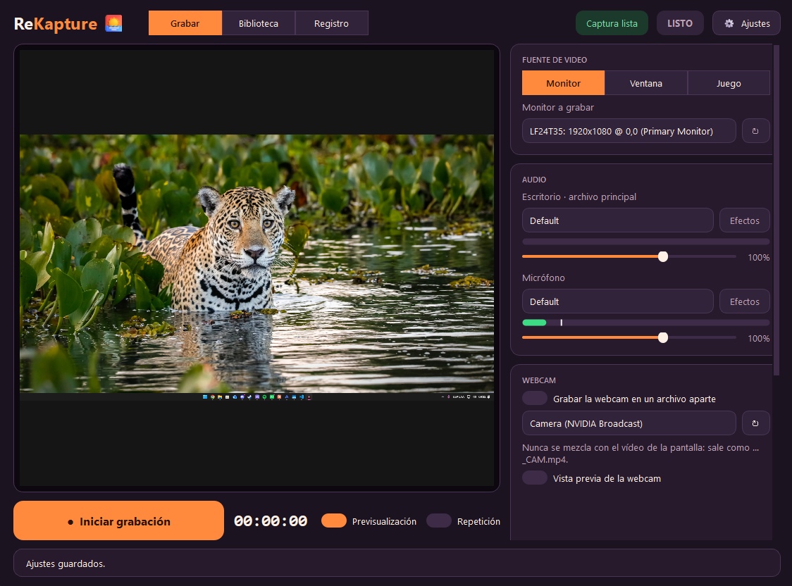
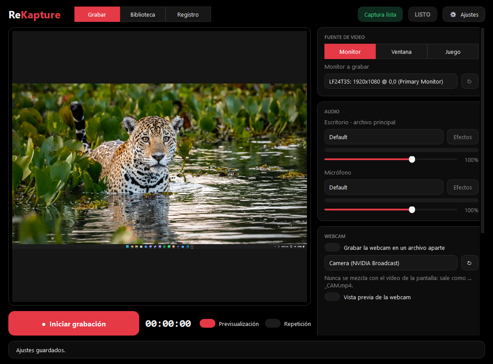

Grabación de gameplay
Capturá tu monitor, una ventana o el juego y concentráte en la partida.

ReKaptureGrabá gameplay, guardá clips y volvé a esos momentos que merecen repetición. Todo desde una interfaz simple, con la potencia del motor de OBS.
Gratis. Sin vueltas. Hecho para jugadores y creadores.

Una grabadora gratuita basada en el motor de OBS, pensada para que configurar y guardar tus partidas sea más directo.
Capturá tu monitor, una ventana o el juego y concentráte en la partida.
Guardá los últimos segundos de juego con clips y repetición instantánea.
Organizá el audio del escritorio y el micrófono en pistas independientes.
Encontrá tus grabaciones, revisá sus detalles y abrí los archivos fácilmente.
Grabá la cámara en un archivo aparte para editarla con libertad.
Elegí resolución, FPS, codificador y calidad de grabación.
La biblioteca reúne tus videos y clips. Revisá la información de cada captura, reproducila o abrí su carpeta desde un solo lugar.




Un vistazo a algunas de las apariencias disponibles. Se seguirán sumando nuevas opciones.




Descargá la versión que prefieras y empezá a grabar tus partidas con ReKapture.